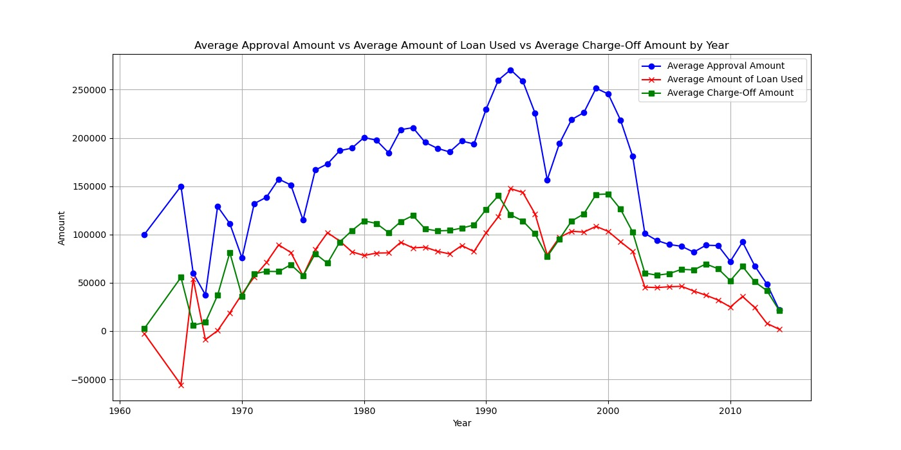
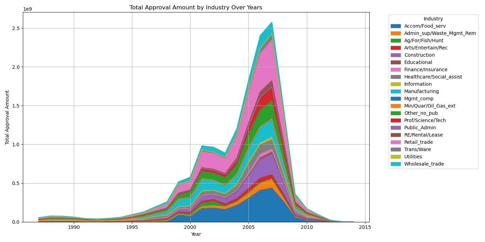
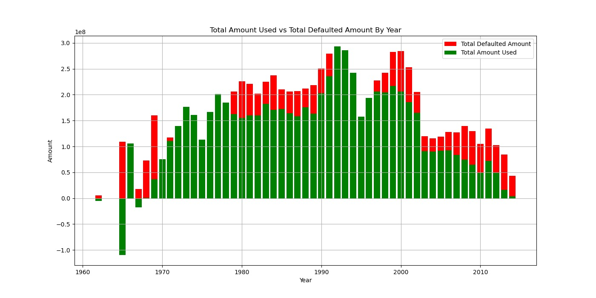
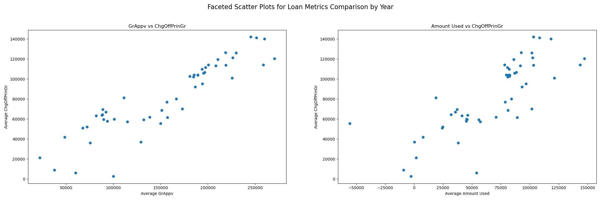
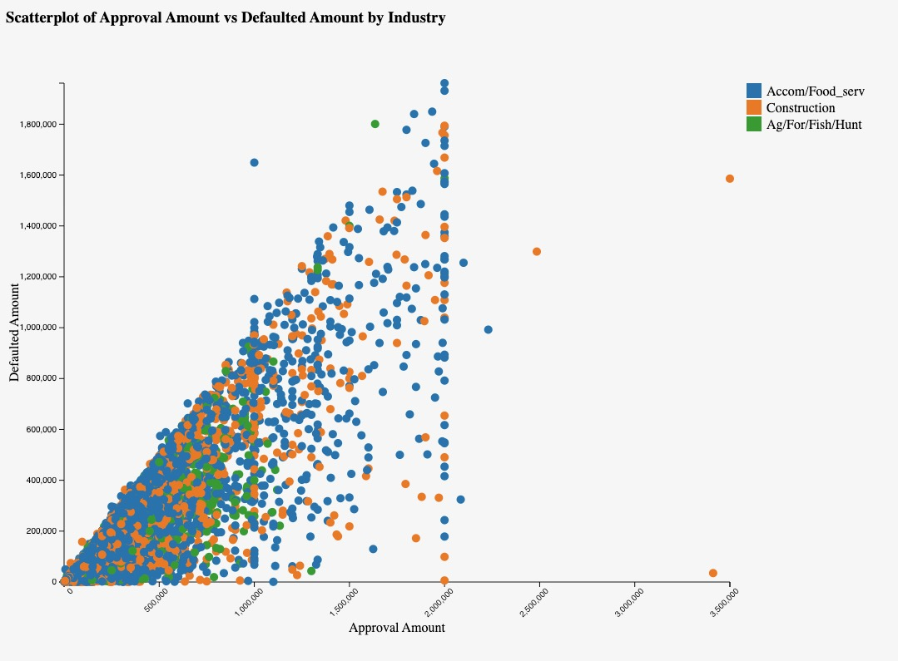
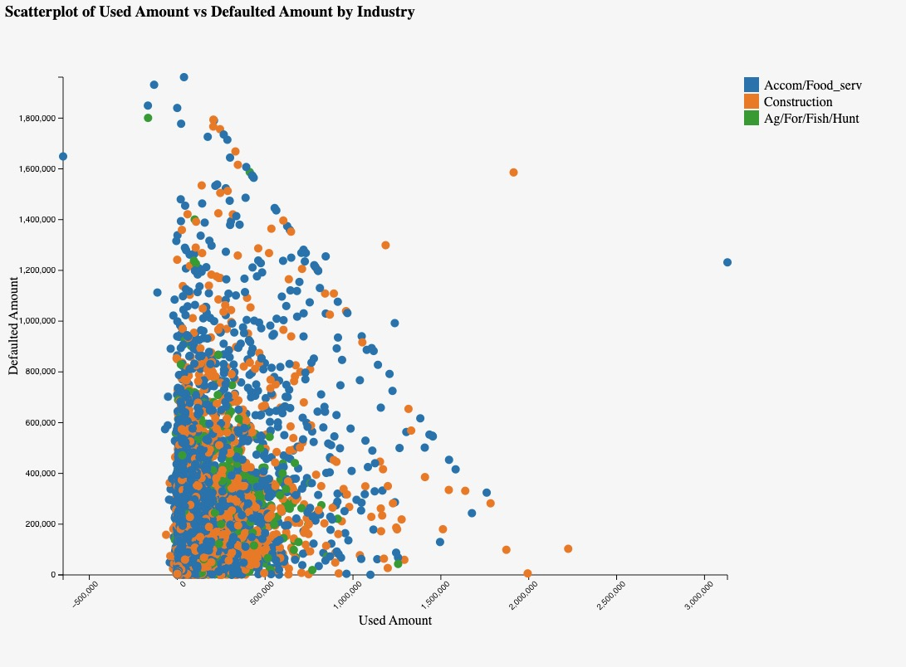

This project uses data to predict small business loan approvals and analyze financial trends, focusing on empowering entrepreneurs and enhancing financial support accessibility.
Introduction
In the current economic climate, small businesses are encountering unprecedented challenges in securing financing. Traditional avenues such as banks, venture capital, and investment entities are becoming increasingly cautious, leaving many entrepreneurs without access to crucial funds. Our endeavor goes beyond merely forecasting the likelihood of loan approval; it aims to empower entrepreneurs to make recommendations. We want to enable prospective borrowers to gauge their chances of success in the loan application process. Additionally, we will provide geographical data interpretations that are interactive, allowing users to understand where past companies have successfully obtained loans.
Understanding loan approvals involves analyzing how loan amounts and industries are interconnected with their loan default rates. Different industries may have varying default risks, influenced by economic conditions, industry stability, and regulations. Larger loan amounts could possibly be associated with higher default rates due to an increased exposure of risk, while certain industries, like agriculture or retail, may have historically higher or lower default rates based on their inherent risks and market dynamics.
To provide a comprehensive understanding of borrowing trends and behavior, we will utilize various visualizations. The significance of this project is magnified by the current economic landscape, where the need for accessible and reliable financial support is more acute than ever. Small businesses, often hailed as the engine of growth, find themselves at a crossroads, requiring innovative solutions to navigate the complexities of financing.
In essence, our project is not just about predictive accuracy; it's about creating a pathway for small businesses to thrive in a challenging environment. By providing them with historical loan data for reference, we aim to give them a glimpse into what loans have looked like in the past. This approach could help redefine the landscape of small business financing, making it more transparent, accessible, and supportive for the innovators and entrepreneurs driving our economy forward.
Data Overview
Our data was accessed through Kaggle, known to provide a strong platform for individuals to engage in data-driven learning and collaborative research. With its extensive collection of datasets spanning different domains, Kaggle facilitates the exploration and application of data science methodologies.
Our specific dataset was curated from the U.S. Small Business Administration (SBA) designed to support research and analysis of credit risk assessment. The core of this dataset presents the objective of empowering data scientists to develop predictive models for loan approval. Composed of variables pertaining to crucial aspects of loan applications such as applicant information, loan terms, and credit history, this dataset offers a source filled with information for assessing creditworthiness, managing risk, and optimizing lending decisions. Featuring 27 columns mixed with categorical and continuous variables, in addition to nearly 900,000 rows of data, this dataset presents significant opportunities for modeling, analytics, and drawing meaningful conclusions. However, due to the dataset's size, we had to perform extensive pre-processing. We filtered out a vast majority of the rows, reducing the dataset down to 200,000 rows, focusing on defaulted loans to align with the main focus of this project. This reduction allowed us to handle the data more effectively and reduce the impact of NaN values. Processing the full 900,000 rows for interactive and normal plots would have been too resource-intensive, so narrowing down the dataset was necessary for the scope of this project.
Data Visualizations
Average Approval Amount vs. Average Amount of Loan Used vs. Average Charge-off Amount by Year

Our visualization titled "Average Approval Amount vs. Average Amount of Loan Used vs. Average Charge-off Amount by Year" provides a comparative view of these three metrics over time. The y-axis represents the amount, while the x-axis indicates the year. We can see that the average approval amount and average amount of loan used track closely together over the years, indicating a consistent pattern. However, the average charge-off amount consistently remains lower, suggesting that despite the amounts approved and used, the actual charge-off rates are comparatively lower, which could indicate effective risk management strategies or favorable economic conditions.
By showing the average approval amount, average amount of loan used, and average charge-off amount over time, it allows us to easily identify trends and patterns. By focusing on averages, it provides a general understanding of the overall behavior of these metrics without being overly detailed, making it a good starting point for further analysis.
Total Approval Amount by Industry Over Years

Our graph titled "Total Approval Amount by Industry Over Years'' features an interesting bell curve shape composed of areas, each color representing a different industry. The graph showcases the total approval amounts for each industry over the years, with a large peak around 2007. This visually appealing representation allows viewers to easily see the trends in approval amounts across various industries, highlighting the growth and fluctuations over time. The bell curve shape adds an interesting visual element, making the data more engaging and understandable at a glance.
Total Amount Used vs. Total Defaulted Amount by Year

Our graph titled "Total Amount Used vs. Total Defaulted Amount by Year" shows a comparative view of those two metrics over time. Showed as a stacked bar chart, the y-axis represents the amounts, including negative values, while the x-axis indicates the years. Each bar is divided into segments, with one segment representing the total defaulted amount and the other representing the total amount used. This visual representation and distinct colors used allow for a clear comparison between the two variables, showing how they vary over the years. The inclusion of the negative values indicates instances where the defaulted amount exceeds the amount used, providing a cohesive view of the data.
Detailed Scatter Plot of Loan Amounts vs. Defaults

The set of faceted scatter plots offers a detailed comparison of loan metrics over the years, providing insights into the relationship between average gross amount approved by the bank, average amount used, and average defaulted/charged off principal amount. In the first graph, which compares the average gross amount approved by the bank to the defaulted/charged off principal amount, a clear positive correlation is observed, indicating that as the approved amount increases, so does the defaulted/charged off principal amount. This suggests that higher loan amounts may carry higher risk of default.
In the second graph, which compares the average amount used to the average defaulted/charged off principal amount, a similar positive correlation is seen, but with some outliers and less linearity. This implies that while there is a general trend of increased defaulted/charged off principal amount with higher amounts used, there are other factors at play that lead to variability in the relationship. These scatter plots provide a visual representation of the relationships between these loan metrics, highlighting trends and patterns that can inform decision-making and risk assessment in the banking sector.
Scatterplot Comparison Visualizations
Approval Amount vs. Defaulted Amount

Used Amount vs. Defaulted Amount

These scatterplots above provide a visual representation of the relationship between the approval/used amounts and defaulted amounts in these industries, offering insights into their loan performance and risk profiles.They focus on data from the top three industries: food services, construction, and agriculture. In the "Approval Amount vs. Defaulted Amount" plot, we observe a trend where higher approval amounts correspond to higher defaulted amounts, indicating that as the approved loan amount increases, so does the risk of default. This is noticeable in the food services industry, where a high density of data points aligns along this trend, suggesting that larger loans in this sector are associated with a higher likelihood of default.
In contrast, the "Used Amount vs. Defaulted Amount" plot shows a different pattern. Most data points are above zero on the x-axis, indicating that the majority of loans in these industries have been utilized to some extent. However, there are several data points that fall right on the line or are negative, suggesting instances where the amount used is equal to or less than the defaulted amount. The food services industry stands out in this plot as well, with a high density of negative and on-the-line data points, indicating a significant number of loans where the amount used is less than the defaulted amount.
Interactive Data Visualizations
Interactive Map of Loan Distribution
The interactive map, which focuses on the top three industries, enables users to explore the distribution of loans across US states. It provides insights into industry prevalence in each state, including details like average loan approval and disbursement amounts. The map features a filter bar for easy navigation and a tooltip that displays essential information when a state is selected, such as the state name, NAICS code, industry, average approval amount, and average amount used. This visualization is a valuable tool for understanding regional economic compositions and lending patterns, offering insights that can inform policy-making and investment decisions.
Industry Analysis Interactive Chart
The interactive industry analysis section provides a dynamic and insightful way to explore data on various industries' loan records. The section consists of two main visual components: a bar graph titled "Select Industries" and a stacked bar chart titled "Detailed Industry Data." In the bar graph, industry names are displayed on the x-axis, while the number of records each industry has is shown on the y-axis. By selecting a bar in this graph, users can see that industry's data in the stacked bar chart to the right. This chart, which represents "Detailed Industry Data," displays the approval fiscal year on the x-axis and the average of the GrApprv (presumably the average approved amount) on the y-axis.
As users select more industries in the bar graph, the stacked bar chart dynamically updates to show the detailed data for each selected industry, allowing for easy comparison over the years. Additionally, the stacked bar chart features a tooltip that provides additional information, such as the approval fiscal year, the average of gross amount approved, the average of amount used, and the average of charge-off principal. This interactive approach to industry analysis offers users a comprehensive and customizable way to explore loan data across a variety of industries, providing valuable insights into any possible industry-specific patterns.
* Instructions: Click on the bars in the left graph to see specific industries and hold shift while clicking to select multiple industries at once *